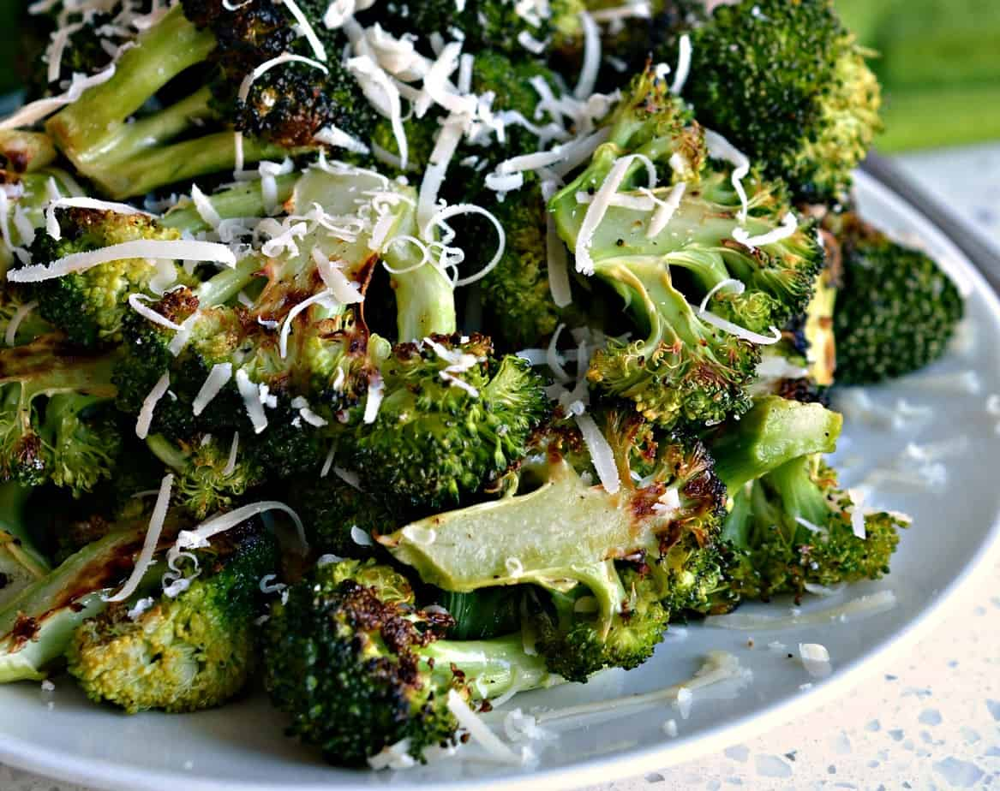

Oven-Roasted Broccoli

The best oven-roasted-broccoli you will ever make!
When I was a small girl growing up on my grand-parents farm, my GiGi always brought out this dish for most family gatherings and I have always loved it!
Ingredients:
- 2 stalks of fresh broccoli
- 3-5 cloves of garlic
- 2 Tbps olive oil
- 1/2 cup grated parmasean cheese
- Salt & Pepper to taste
Steps:
- Pre-heat your oven to 425 degrees. Cut your broccoli into bite-sized pieces and wash them. Make sure to pat the broccoli dry with paper towels to remove excess water.
- In a bowl, mix together the broccoli, olive oil, garlic, and salt & pepper.
- Spread the mix out onto a tinfoil-lined cookie sheet in an even layer.
- Place the sheet in the oven and bake for about 10-12 minutes.
- Take the sheet out of the oven and flip/stir the broccoli and then sprinkle the parmasean cheese all over.
- Bake for another 7-10 minutes or until the cheese is melted and the broccoli is nice and golden-brown.
- Enjoy!